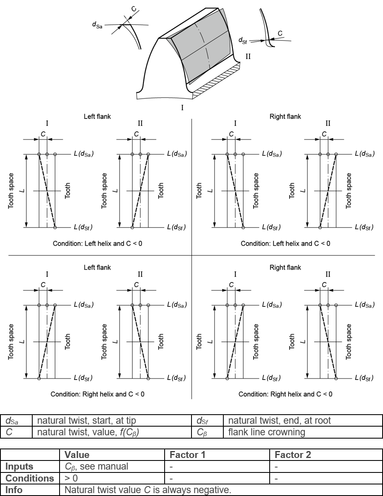

|
|
|


制造引起的扭转：由齿向线鼓形修形 Cβ 引起的自然扭转（展成磨削）
在选项卡中，您可以选择制造引起的扭转作为修形。这是斜齿轮在标准磨床上展成过程中形成齿向线鼓形修形时出现的自然扭转。产生的扭转取决于齿向线鼓形修形的 Cβ 值、螺旋角以及渐开线长度。计算使用德国路德维希堡的 Gleason-Pfauter 公司提供的数据进行。此处使用的公式对应于 Hellmann 博士论文 [29] 中的公式 5.16。将要磨削的鼓形修形值 Cβ 输入到值列中。产生的扭转随后在计算过程中确定，并记录在信息下。展成磨削过程总是产生负扭转。
制造引起的扭转只有在使用展成磨削工艺时才能计算。如果涉及成形磨削工艺，则必须使用适合特定工艺的不同方法来确定产生的扭转。成形磨削总是产生正扭转。

图 15.59：制造引起的扭转
Twist due to manufacturing: natural twist due to flank line crowning Cβ (generation grinding)
In the tab, you can select Twist due to manufacturing as a modification. This is a natural twist that occurs when flank line crowning is created on helical gears as part of the generation process on standard grinding machines. The resulting twist depends on the value Cβ of the flank line crowning, the helix angle and also the involute length. The calculation is performed using data provided by the company Gleason-Pfauter, in Ludwigsburg, Germany. The formula used here corresponds to equation 5.16 in Hellmann's dissertation [29]. Enter the value of the crowning to be ground, Cβ, in the Value column. The resulting twist is then determined during the calculation process, and is documented under Information. The generation grinding process always creates a negative twist.
Twist due to manufacturing can only be calculated if a generation grinding process is used. If a form grinding process is involved, different methods that are suitable for the particular process must be used to determine the resulting twist. Form grinding always generates a positive twist.
Figure 15.59: Twist due to manufacturing